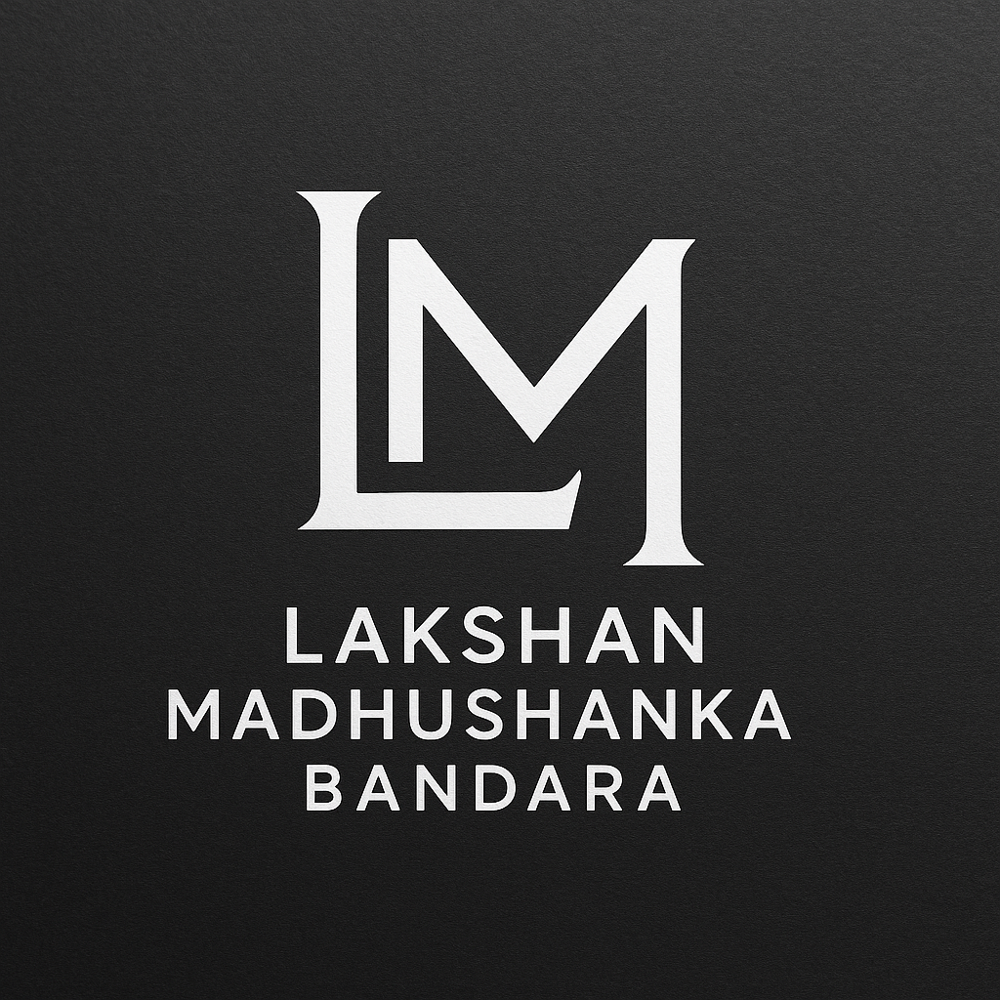

IEEE Young Professionals BangladeshInvited Talk
IEEE Young Professionals BangladeshInvited TalkSessions
&
Invited Talks
Knowledge-sharing sessions, workshops, invited lectures, and technical talks across artificial intelligence, computer vision, biomedical imaging, robotics, software development, and emerging technologies.
Technical Sessions
Workshops
Leadership Guidance
Organizations I Have Delivered Sessions For
IEEE Young Professionals BangladeshInvited TalkIEEE ULAB Student BranchSession PartnerIEEE TryEngineeringJudging
National Student Leadership ConferenceStudent Presentations University of Sri JayewardenepuraAcademic Session
University of Sri JayewardenepuraAcademic Session University of PeradeniyaAcademic Session
University of PeradeniyaAcademic SessionFeatured Session
Invited Talk
IEEE Young Professionals Bangladesh International Talk Series
- Event / Organization
- IEEE Young Professionals Bangladesh
- Date
- July 2025
- Venue
- Online
Guest speaker talk on "Advances in Computer Vision for Medical Imaging and Robotics", organized with IEEE ULAB Student Branch.
Medical Imaging
Computer Vision
Robotics
IEEE Session
View Details →
Sessions & Invited Talks
All
Invited Talks
Workshops
Academic Sessions
Technical Sessions
IEEE Sessions
Jul2025
Invited Talk
IEEE YP Bangladesh International Talk Series
Talk: "Advances in Computer Vision for Medical Imaging and Robotics", organized in association with IEEE ULAB Student Branch.
Computer VisionMedical ImagingRoboticsIEEE Session
Aug2025
Judge
TryEngineering Summer Institute Student Presentations
Invited by IEEE TryEngineering to evaluate student innovation projects in engineering and technology.
Student InnovationEngineeringEvaluation
Jan2026
Guest Speaker
INTELLECT 2.0 Leadership Program
Talk: "Technology and Its Impact on the Future" for a student leadership and emerging technology audience.
Emerging TechnologyLeadershipFuture Impact
Moments from Sessions
Topics I Can Deliver
Computer Vision & Image Processing
Visual understanding, image analysis, and applied vision workflows.
Artificial Intelligence & Machine Learning
AI concepts, practical ML workflows, and real-world applications.
Biomedical Image Processing
Healthcare-focused image analysis and biomedical data workflows.
Deep Learning for Medical Imaging
Deep learning methods for medical image analysis and decision support.
Robotics & Intelligent Systems
Robotics, automation, perception, and intelligent control concepts.
Web Development & Software Engineering
Software foundations, implementation practices, and web systems.
Research Methodology & Academic Writing
Research planning, writing, documentation, and communication.
IEEE Leadership & Student Branch Development
Leadership development, branch growth, and professional engagement.
Professional Skills & Technical Communication
Presentation skills, technical explanation, and professional confidence.
Invite me for a session, workshop, or academic discussion.
I am open to invited talks, workshops, technical sessions, student mentoring sessions, and academic discussions related to computing, artificial intelligence, computer vision, biomedical imaging, robotics, software development, and professional development.